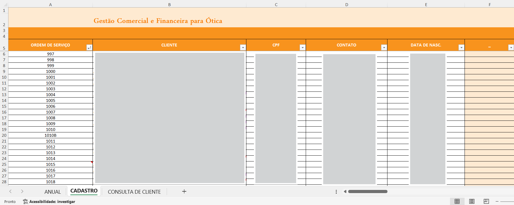
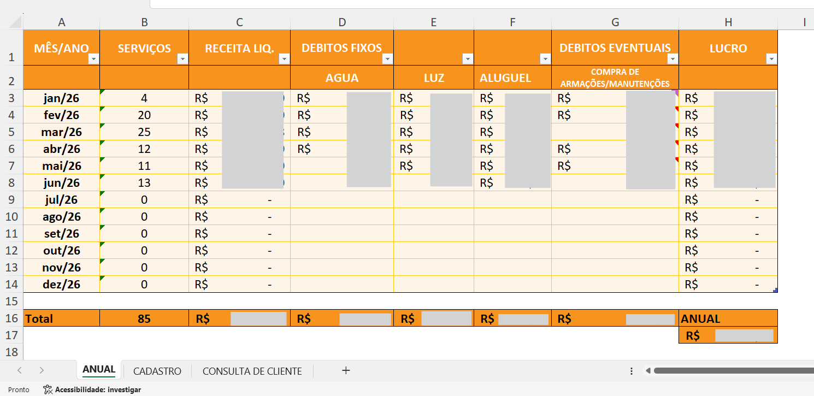
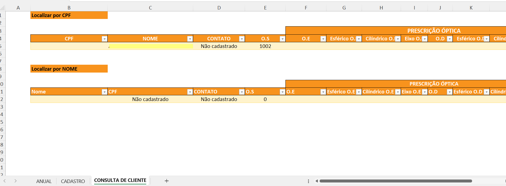

Contexto
Uma ótica enquadrada como Microempreendedor Individual (MEI) enfrentava dificuldades para controlar suas operações comerciais e financeiras.
Grande parte das informações era registrada manualmente em papel, dificultando consultas sobre clientes, histórico de vendas, ordens de serviço e faturamento.
Além disso, não existia uma visão consolidada sobre indicadores importantes para a gestão do negócio, como faturamento mensal, custos operacionais, quantidade de vendas e lucratividade.
Diante desse cenário, surgiu a necessidade de desenvolver uma solução simples que centralizasse todas essas informações e facilitasse a gestão do negócio.
Objetivo
Desenvolver um sistema simples, intuitivo e de fácil utilização para centralizar as principais informações da operação da ótica.
A solução deveria permitir que o proprietário registrasse, consultasse e acompanhasse rapidamente informações relacionadas a:
- Clientes;
- Ordens de Serviço;
- Prescrição óptica;
- Vendas;
- Custos;
- Faturamento;
- Lucro.
Todas as funcionalidades foram definidas em conjunto com o proprietário, buscando atender às necessidades reais da operação e substituir os controles manuais utilizados anteriormente.
Processo
1. Levantamento de requisitos
Antes do desenvolvimento da solução, realizei reuniões com o proprietário para compreender quais informações eram essenciais para a gestão do negócio.
Foram identificadas necessidades relacionadas ao cadastro de clientes, controle financeiro, consultas históricas e armazenamento das prescrições ópticas.
2. Estruturação da solução
A partir dos requisitos levantados, desenvolvi uma planilha organizada por exercício (2024, 2025 e 2026), contendo módulos específicos para diferentes finalidades.
Cada ano possuía três áreas principais:
- Cadastro;
- Painel Anual;
- Consulta de Clientes.
3. Desenvolvimento dos módulos
Foram desenvolvidos módulos para centralizar as informações da operação.
Cadastro
- Ordem de Serviço;
- Cliente;
- CPF;
- Contato;
- Dados laboratoriais;
- Prescrição óptica;
- Valores da venda;
- Forma de pagamento;
- NF-e.
Painel Anual
- Quantidade de vendas;
- Receita;
- Custos fixos;
- Custos eventuais;
- Lucro.
Consulta Inteligente
Também foi desenvolvida uma tela para localização rápida das informações utilizando apenas nome ou CPF, permitindo recuperar automaticamente:
- Ordem de Serviço;
- Contato;
- Prescrição óptica;
- Histórico do cliente.
4. Implantação e treinamento
Após finalizar o desenvolvimento, realizei um treinamento com o proprietário da ótica, demonstrando como registrar novas vendas, consultar informações e acompanhar os indicadores do negócio.
Como o usuário não possuía experiência com Excel, toda a solução foi desenvolvida priorizando simplicidade, organização e facilidade de utilização.
Entregáveis
- Sistema de cadastro de clientes;
- Controle financeiro da operação;
- Consulta inteligente de clientes;
- Histórico anual organizado por exercício (2024, 2025 e 2026).
Insights
A implementação da solução proporcionou melhorias importantes para a gestão da ótica:
- Centralização das informações da empresa;
- Organização das Ordens de Serviço;
- Maior controle sobre vendas e faturamento;
- Acompanhamento dos custos operacionais;
- Consulta rápida do histórico dos clientes;
- Apoio na gestão financeira e no acompanhamento do faturamento anual do MEI.
Ferramenta utilizada
- Excel
Competências demonstradas
- Levantamento de requisitos;
- Entendimento do negócio;
- Organização de processos;
- Estruturação de dados;
- Modelagem de controles;
- Comunicação com o usuário;
- Treinamento;
- Excel.
Evidências
Os dados pessoais e financeiros foram ocultados para preservar a confidencialidade das informações.


